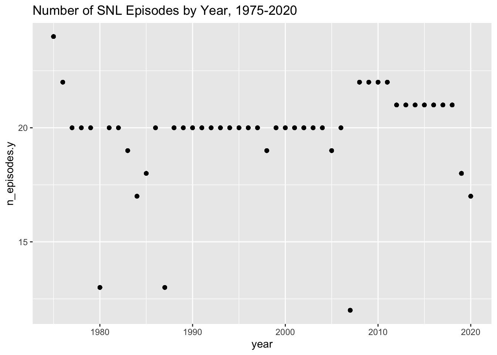

mutate variables as needed (including sanity checks)
join two or more data sets and analyze some aspect of the joined data (see detailed instruction below)
(be sure to only include the category tags for the data you use!)
Reading in the SNL files: Actors, Casts, Seasons
Brief description of the SNL data sets
Three datasets of the NBC television program, Saturday Night Live (SNL), exist with three themes: Actors, Casts, and Seasons. Let’s take a look at the content and features of each dataset, and determine if and how these three datasets might be combined on common features to provide the combined dataset we want for performing the analysis we’d like to do.
The actors data set format and data content:
First let’s look at the actors file, and consider what columns might be options to use for joining with the other two files:
#creating actors variable from file snl_actors.csv:snl_actors <-read_csv("_data/snl_actors.csv")#The dataset of the file snl_actors.csv has __________dim(snl_actors)
[1] 2306 4
head(snl_actors)
# A tibble: 6 × 4
aid url type gender
<chr> <chr> <chr> <chr>
1 Kate McKinnon /Cast/?KaMc cast female
2 Alex Moffat /Cast/?AlMo cast male
3 Ego Nwodim /Cast/?EgNw cast unknown
4 Chris Redd /Cast/?ChRe cast male
5 Kenan Thompson /Cast/?KeTh cast male
6 Carey Mulligan /Guests/?3677 guest andy
#Remove url column from actors filesnl_actors <- snl_actors %>%select(-c(url))#display head of snl_actors data set to confirm removal of url columnhead(snl_actors)
# A tibble: 6 × 3
aid type gender
<chr> <chr> <chr>
1 Kate McKinnon cast female
2 Alex Moffat cast male
3 Ego Nwodim cast unknown
4 Chris Redd cast male
5 Kenan Thompson cast male
6 Carey Mulligan guest andy
I removed the url column from the actors file, and I see in the changes took place, and the url is not included any longer.
The actors file has 2306 rows and 4 columns after removing the url column.
Let’s take a look at the actors data set using summarytools function:
Generated by summarytools 1.0.1 (R version 4.2.2) 2023-04-28
Summarytools provides more information than we may have needed, yet when we see all of this information about the data set, we may be inspired to consider additional analysis, or investigate aspects of the data set we weren’t previously focusing upon.
The casts data set format and data content:
Here’s the basic file characteristics for the casts data set:
#creating casts variable from file snl_casts.csvsnl_casts <-read_csv("_data/snl_casts.csv")#The dataset of the file snl_casts.csv format and contentdim(snl_casts)
[1] 614 8
head(snl_casts)
# A tibble: 6 × 8
aid sid featured first_epid last_epid update_…¹ n_epi…² seaso…³
<chr> <dbl> <lgl> <dbl> <dbl> <lgl> <dbl> <dbl>
1 A. Whitney Brown 11 TRUE 19860222 NA FALSE 8 0.444
2 A. Whitney Brown 12 TRUE NA NA FALSE 20 1
3 A. Whitney Brown 13 TRUE NA NA FALSE 13 1
4 A. Whitney Brown 14 TRUE NA NA FALSE 20 1
5 A. Whitney Brown 15 TRUE NA NA FALSE 20 1
6 A. Whitney Brown 16 TRUE NA NA FALSE 20 1
# … with abbreviated variable names ¹update_anchor, ²n_episodes,
# ³season_fraction
Generated by summarytools 1.0.1 (R version 4.2.2) 2023-04-28
The seasons data set format and data content:
Here’s the basic file characteristics for the seasons data set:
#creating seasons variable from file snl_seasons.csv:snl_seasons <-read_csv("_data/snl_seasons.csv")#Showing the format and contents of the data set of the file snl_seasons.csv dim(snl_seasons)
Generated by summarytools 1.0.1 (R version 4.2.2) 2023-04-28
How the data sets will be joined:
From seeing the contents and format of the data sets, we see the column names of each dataset, and deduce that the three datasets do not have common columns among all three data sets. Casts and seasons data sets share common data in their columns entitled “sid”. Casts and actors data sets shared common data in their columns entitled “aid”. We’ll join the three data sets in two steps within a piped function set:
1.Join snl_casts to snl_seasons
2.Join data set created in Step 1 to snl_actors.
Tidy Data steps needed?
Although not every single column of the three data sets are needed - specifically one column in snl_actors, entitled “URL”. When reviewing the individual data sets above, I removed the url column, and checked that the removal was successful. Retaining the rest of the columns within the data sets provides the possibilities of unanticipated analysis by keeping the columns and rows of the three data sets. Because the size of the data set files are not extraordinarily large, we can easily keep all of the data sets’ contents without burdening our coding work or analysis.
Joining the data sets
Joining all 3 data sets:
#full join of joined casts and seasons to actorsSNL_csa<-full_join(snl_casts, snl_seasons, by="sid")%>%full_join(.,snl_actors, by="aid")head(SNL_csa)
# A tibble: 6 × 14
aid sid featu…¹ first…² last_…³ updat…⁴ n_epi…⁵ seaso…⁶ year first…⁷
<chr> <dbl> <lgl> <dbl> <dbl> <lgl> <dbl> <dbl> <dbl> <dbl>
1 A. Whitne… 11 TRUE 1.99e7 NA FALSE 8 0.444 1985 1.99e7
2 A. Whitne… 12 TRUE NA NA FALSE 20 1 1986 1.99e7
3 A. Whitne… 13 TRUE NA NA FALSE 13 1 1987 1.99e7
4 A. Whitne… 14 TRUE NA NA FALSE 20 1 1988 1.99e7
5 A. Whitne… 15 TRUE NA NA FALSE 20 1 1989 1.99e7
6 A. Whitne… 16 TRUE NA NA FALSE 20 1 1990 1.99e7
# … with 4 more variables: last_epid.y <dbl>, n_episodes.y <dbl>, type <chr>,
# gender <chr>, and abbreviated variable names ¹featured, ²first_epid.x,
# ³last_epid.x, ⁴update_anchor, ⁵n_episodes.x, ⁶season_fraction,
# ⁷first_epid.y
dim(SNL_csa)
[1] 2764 14
The combined data set of the 3 files for SNL has 2764 rows with 14 columns. The actors file had 2764 rows, so this data set’s count of rows is what we were expecting.
We see the join of all three data sets was successful.
We can now see the full summarytools view of all three data sets now combined into one data set:
Generated by summarytools 1.0.1 (R version 4.2.2) 2023-04-28
Analysis of New, Combined SNL Dataset
ggplot(SNL_csa, aes(x=`year`, y=`n_episodes.y`)) +geom_point()+labs(title ="Number of SNL Episodes by Year, 1975-2020")

We can quickly and easily conclude that most frequent count of episodes per year is 20.
CONCLUSION
Combining data sets with the Join functions is a powerful and essential function. Finding common column content in the data sets is one of the first steps - after determining how you want your end result to appear. Some data sets do not share a common column, and must be joined with 3rd data set with which each of the two original data sets share different, while each share a different common column of the 3rd data set.
Source Code
---title: "Joining SNL Datasets"author: "Kris Smole"description: "Using Join Functions to Combine Two or More Datasets into One Dataset"date: "04/26/2023"format: html: toc: true code-copy: true code-tools: truecategories: - challenge_8 - snl---```{r}#| label: setup#| warning: false#| message: falselibrary(tidyverse)library(ggplot2)knitr::opts_chunk$set(echo =TRUE, warning=FALSE, message=FALSE)```## Challenge Overview {#challenge-overview}Today's challenge is to:2) tidy data (as needed, including sanity checks)3) mutate variables as needed (including sanity checks)4) join two or more data sets and analyze some aspect of the joined data (see detailed instruction below)(be sure to only include the category tags for the data you use!)## Reading in the SNL files: Actors, Casts, Seasons### Brief description of the SNL data setsThree datasets of the NBC television program, Saturday Night Live (SNL), exist with three themes: Actors, Casts, and Seasons. Let's take a look at the content and features of each dataset, and determine if and how these three datasets might be combined on common features to provide the combined dataset we want for performing the analysis we'd like to do.### The actors data set format and data content:First let's look at the actors file, and consider what columns might be options to use for joining with the other two files: ```{r}#creating actors variable from file snl_actors.csv:snl_actors <-read_csv("_data/snl_actors.csv")#The dataset of the file snl_actors.csv has __________dim(snl_actors)head(snl_actors)#Remove url column from actors filesnl_actors <- snl_actors %>%select(-c(url))#display head of snl_actors data set to confirm removal of url columnhead(snl_actors)```I removed the url column from the actors file, and I see in the changes took place, and the url is not included any longer.The actors file has 2306 rows and 4 columns after removing the url column.Let's take a look at the actors data set using summarytools function:```{r}print(summarytools::dfSummary(snl_actors,varnumbers =FALSE,plain.ascii =FALSE, style ="grid", graph.magnif =0.70, valid.col =FALSE),method ='render',table.classes ='table-condensed')```Summarytools provides more information than we may have needed, yet when we see all of this information about the data set, we may be inspired to consider additional analysis, or investigate aspects of the data set we weren't previously focusing upon.### The casts data set format and data content:Here's the basic file characteristics for the casts data set:```{r}#creating casts variable from file snl_casts.csvsnl_casts <-read_csv("_data/snl_casts.csv")#The dataset of the file snl_casts.csv format and contentdim(snl_casts)head(snl_casts)```The casts file has 614 rows and 8 columns.```{r}print(summarytools::dfSummary(snl_casts,varnumbers =FALSE,plain.ascii =FALSE, style ="grid", graph.magnif =0.70, valid.col =FALSE),method ='render',table.classes ='table-condensed')```### The seasons data set format and data content:Here's the basic file characteristics for the seasons data set:```{r}#creating seasons variable from file snl_seasons.csv:snl_seasons <-read_csv("_data/snl_seasons.csv")#Showing the format and contents of the data set of the file snl_seasons.csv dim(snl_seasons)head(snl_seasons)```Now, let's take a look at the seasons data set using summarytools function:```{r}print(summarytools::dfSummary(snl_seasons,varnumbers =FALSE,plain.ascii =FALSE, style ="grid", graph.magnif =0.70, valid.col =FALSE),method ='render',table.classes ='table-condensed')```### How the data sets will be joined: From seeing the contents and format of the data sets, we see the column names of each dataset, and deduce that the three datasets do not have common columns among all three data sets. Casts and seasons data sets share common data in their columns entitled "sid". Casts and actors data sets shared common data in their columns entitled "aid". We'll join the three data sets in two steps within a piped function set:1.Join snl_casts to snl_seasons2.Join data set created in Step 1 to snl_actors.# Tidy Data steps needed?Although not every single column of the three data sets are needed - specifically one column in snl_actors, entitled "URL". When reviewing the individual data sets above, I removed the url column, and checked that the removal was successful. Retaining the rest of the columns within the data sets provides the possibilities of unanticipated analysis by keeping the columns and rows of the three data sets. Because the size of the data set files are not extraordinarily large, we can easily keep all of the data sets' contents without burdening our coding work or analysis.```{r}```## Joining the data sets### Joining all 3 data sets:```{r}#full join of joined casts and seasons to actorsSNL_csa<-full_join(snl_casts, snl_seasons, by="sid")%>%full_join(.,snl_actors, by="aid")head(SNL_csa)dim(SNL_csa)```The combined data set of the 3 files for SNL has 2764 rows with 14 columns. The actors file had 2764 rows, so this data set's count of rows is what we were expecting.## We see the join of all three data sets was successful. We can now see the full summarytools view of all three data sets now combined into one data set:```{r}print(summarytools::dfSummary(SNL_csa,varnumbers =FALSE,plain.ascii =FALSE, style ="grid", graph.magnif =0.70, valid.col =FALSE),method ='render',table.classes ='table-condensed')``````{r}```## Analysis of New, Combined SNL Dataset```{r}ggplot(SNL_csa, aes(x=`year`, y=`n_episodes.y`)) +geom_point()+labs(title ="Number of SNL Episodes by Year, 1975-2020")```We can quickly and easily conclude that most frequent count of episodes per year is 20.## CONCLUSIONCombining data sets with the Join functions is a powerful and essential function. Finding common column content in the data sets is one of the first steps - after determining how you want your end result to appear. Some data sets do not share a common column, and must be joined with 3rd data set with which each of the two original data sets share different, while each share a different common column of the 3rd data set.